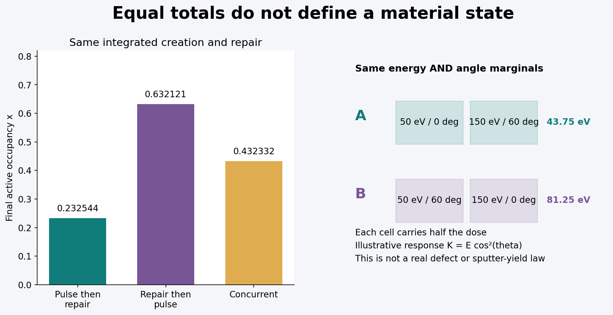
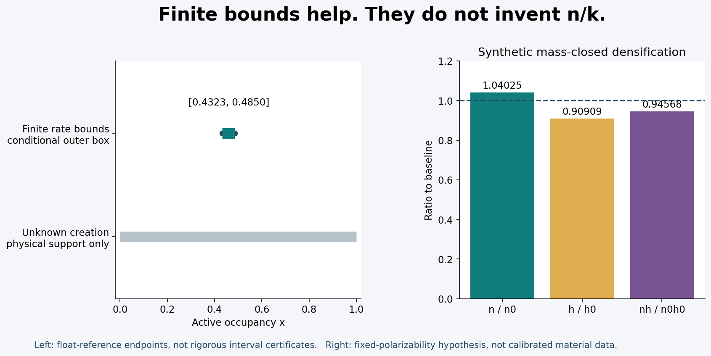
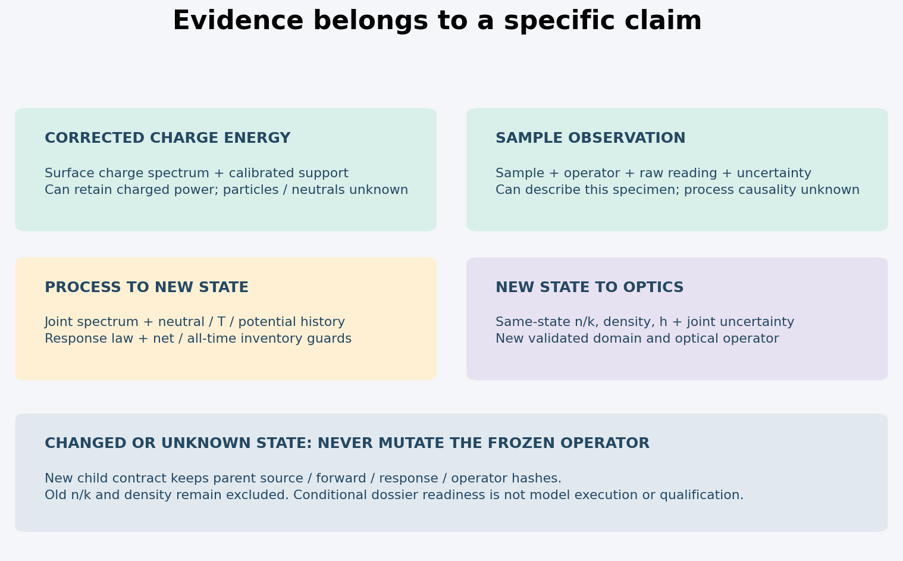
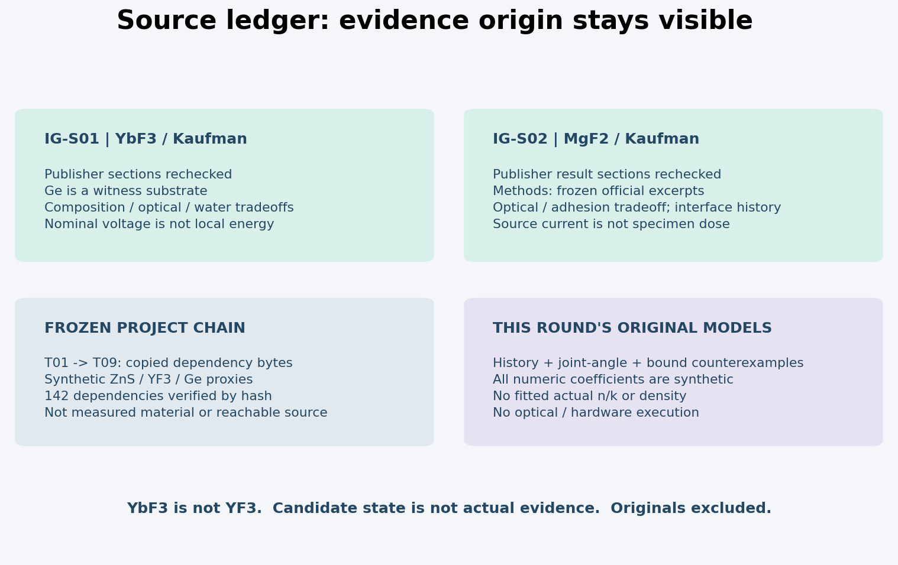

原创合成小模型与有限证据逻辑，无真实材料标定、生产资格或新光学执行。旧point12 partial、point2 conditional non-strict和formal pending保留。PNG实际像素检查；HTML布局unverified。
四张图看清本轮增量




01 · 离子作用改变膜态以后，原来的算子还能用吗？
工程结论
能复用一个算法的形式，不等于能复用一个已冻结的算子实例。现有T06–T09计算把材料、同批潜变量、厚度映射、源归一化和测量条件绑在一起。离子引起组成、孔隙、缺陷、应力、深度分布或吸湿状态变化时，旧n/k与旧有效密度不能自动随同新厚度进入这条链。先派生新的材料状态合同，再确定所需证据与新算子；没有证据的数值仍为null。
本轮的增量不是另造一份电源/杯/能谱字典。T10R2已经解决“源电压不是局部动能”“杯的电子与二次发射校正”“平面RFEA的法向选择”“带电能流的特殊可辨识性”和净库存记账。本轮转而研究三件事：低阶暴露矩为何不能关闭材料状态；有限的未知能否变成条件外包络；一种响应被观测到以后，到底准许哪个主张进入哪个算子。
三种有用但不同的入口
1. 描述一个已测样品的指定光学观测：需要样品身份、测量算子、原始观测和不确定度。若没有完整离子历史，仍可报告该样品的观测；不能据此解释离子因果或复现工艺
2. 根据过程预测新样品状态：需要局部粒种/电荷、联合能角谱、剂量与速率历史、中性约束、温度/电位、净库存和状态响应模型。缺项可能使预测unknown，即使光谱测得很好
3. 将新样品状态传入新光学模型：需要同状态n/k、几何厚度、有效密度（若走质量→厚度桥）、组成与联合不确定度，并重新绑定波长、带宽、角度、偏振、背面、粗糙/散射和独立验证域。若几何厚度独立实测且不走质量桥，另建明确无密度依赖的合同；本轮的new_optical_state入口特指保留质量桥的较强要求
这三个入口不能互相冒充。缺中性证据不会抹掉已经定义好的样品透过测量，却会阻断“某剂量导致此材料状态”的迁移主张。全部必需项都有声明证据时，本程序只说“有条件资料齐备，可评审新模型”，并不运行或批准新光学算子。
原有光学材料标签不可偷换
复制的上游合同明确使用ZnS surrogate、YF3 surrogate与Ge surrogate，n/k仍为合成常数。下面的YbF3实验不是YF3；Ge见证基片也不是Ge沉积膜。把二者相混比数值误差更根本。即使波长相同，真实YbF3数据也不能写回旧YF3合同。
旧链未变、无新离子状态、完全相同hash且仍声明合成时，legacy_reuse可给“原合成重放资格”。本轮没有重放旧光学内核，也没有重新认证T09的98 OUT/32 UNKNOWN、7叶OUT切片、最优界或来源可达性。那些只是原冻结结果，本轮不把保存JSON当live证书。
02 · 两类Kaufman薄膜证据：机制线索，不是本机参数
有界原始证据
Sun等，2022，YbF3的出版商可检索正文重新核读到§2.1与§3：Kaufman辅助热蒸发，Ge片用于XPS/IR，硅石片用于另一些光学/曲率测量。名义源电压组0/180/360 V不能改写成本机单能到靶谱。文中观察到失氟、可见吸收与吸湿带变化的权衡；各基片测量不能拼成一个样品的联合真值。
Zhang等，2019，MgF2的出版商摘要及§3.3–3.4重新核读：氧辅助条件下光学改善与附着恶化并存；文中分段引入辅助说明起始界面历史是独立变量。Kaufman身份与名义0/50/80 mA、300°C、0.8 nm/s来自已冻结的官方重印本方法核读。本轮未取得PDF，不提升为全篇逐表复核。电流是源组设定，不是工件注量。
源账本给访问层级和具体定位。两篇论文支持“需要区分组成、界面和波段”的研究问题，不提供本包a、b、c系数，亦不证明下面任何合成阈值适用于真实氟化物。这里没有重画论文原图，没有照录拟合的n/k曲线。
证据可以怎样用
YbF3线索优先提出“改变结构的同时是否改变组成及吸收”的可证伪问题；MgF2线索提出“相同末端膜体指标是否保留起始界面差异”。这并不认定单一微观解释已经成立。组成测量有表面敏感深度、溅射清洗和代表性；曲率反演有基片模型；光学拟合有厚度、粗糙与背面相关性。一个观测方法不能自动替代另一种独立验证。
优先基片ZnS、ZnSe、K9没有因此获得同条件离子窗口。BK7不是任意K9；Ge上的透射/XPS不是Ge上的曲率应力；论文预清洗也不是本机预清洗许可。End-Hall研究只作为隔离的背景线索，不进入本轮两项Kaufman来源数据。
所有实际参数保持空白
本机源型、局部能角谱、中性比例、膜温、面电位、净元素库存、实际ρ与n/k均未提供。两份论文的设定不导入参考算法。公开证据与合成算例分别存放；参考输出中actual_nk和actual_density显式为null。
本轮网页直开出现限流，机构PDF返回不可获取，官方PDF缓存未命中；没有绕过限制，也没有声称已本地归档原文。原文目录受发布排除规则约束，当前新增原件0份。来源本身的开放许可与“已成功取得文件”是两个状态。
03 · 一个可被实验否证的有记忆小模型
状态不是剂量的另一个名字
定义固定活性表面层的缺陷占据分数x∈[0,1]；活性位点面密度L的单位为sites/m²。x只是待检验的简化状态，不预先等同真实氟空位浓度。入射造成可占据位点的产生速率a，热/化学修复速率b，正生长的埋藏/无缺陷新物质置换速率c，三者单位均为s⁻¹。在一个常值时间bin中：
dx/dt = a(1−x) − (b+c)x a = Σ_s ∫ Γ_s(E,Ω,t) κ_s(E,Ω;state) dE dΩ c = Φinc / L （仅正生长、活性层库存恒定时） dB/dt = L c x
κ单位为m²/incident particle，所以Γκ为s⁻¹；B是累积埋入的缺陷位点数/m²，不是全部元素库存，也不是当前仍存活的体缺陷密度。若埋藏后会修复，需要新增体态方程；本模型没有悄悄假定B等于最终吸收中心数量。净侵蚀时c不能取负代入；应停止这个固定活性层模型，转到移动边界与层身份重建。
精确分段解
令k=a+b+c，x∞=a/k，Δ为bin时长。k>0时：
xout = x∞ + (xin−x∞) exp(−kΔ) I = ∫x dt = x∞ Δ + (xin−x∞)(1−exp(−kΔ))/k ΔB = L c I
k=0时xout=xin、I=xinΔ。代码用expm1和小参数展开避免两个近等数相减。xout是xin与x∞的凸组合，故非负率保持[0,1]；不通过裁剪掩盖失稳。该解析离散是模型内精确形式，双精度输出仍非严格外向舍入区间。
真实b可以依赖温度，例如有根据时检验活化形式；本轮不填真实活化能或频率因子。a要积分联合粒种/能角核，不把电压、电流或均能当a。κ尚未知时，“已测谱”也不能独自把状态关闭。
同剂量、同积分修复，交换顺序仍不同
从x0=0开始。A先用a=1、b=c=0持续1 s，再用b=1、a=c=0持续1 s；B交换两个bin。两者∫a dt=1、∫b dt=1、总时长相同，具有相同的轰击脉冲总剂量和能谱。末态分别：
xA = (1−e⁻¹)e⁻¹ = 0.232544158 xB = 1−e⁻¹ = 0.632120559
将a=b=0.5同时作用2 s得0.432332358。差别源于产生与修复两个状态流不交换，不是数值误差。此反例没有重复R2的“谱尾不同”例；它明确给出能被时间重排对照否证的状态演化预测。
怎样证伪，而非怎样把它拟合成功
在已批准的安全域中，先独立给定净正库存与初态，再改变轰击/修复的次序；冻结观测方法、末态等待时间和环境。模型预测的差异若在独立批次中被响应区间排除，应拒绝或扩充模型，而不是删掉样品。x若不能独立测量，只凭一条光谱同时拟合κ、L、b和x→k映射通常不可识别，不能把拟合残差小称为机制成立。允许的扩充包括多缺陷态、组成反应、深度扩散及埋藏后修复；本轮不拟合这些自由度。
04 · 联合能角分布与未知中性的有限界
连边际分布相同也不够
R2已证明同均能、同注量不决定非线性谱尾响应。本轮更强：即使完整能量边际和角度边际分别相同，能角相关性仍可决定响应。两束各一半粒子在50/150 eV，各一半在0°/60°，总注量相同：
• A配对(50 eV,0°)、(150 eV,60°)
• B配对(50 eV,60°)、(150 eV,0°)
纯合成核K(E,θ)=E cos²θ得到平均43.75与81.25 eV。两束均能都为100 eV。这个核只是展示不可分离响应的一种选择，不是任何真实缺陷/溅射产额，也不是用RFEA恢复实际总能量的方法。Γ已按真实表面积归一，不再额外乘cosθ；否则会把投影算两次。
缺少联合信息时，不应把两个独立边际相乘，除非有独立性证据。离子/中性、温度与通量、面电位与电流也都可能相关。可计算包含所有允许耦合的外包络，但不能将其中每个极端拼成一条真实共同历史。
中性未知不总是要抹掉全部结果
R2的结论保留：完整校正的表面正电荷电流加权总动能/电荷谱g(u)可以给qcharged=∫u g(u)du，而不要求已知每个z。它不能独自给粒子注量、快中性动能或材料状态。当前gate将这种主张单列，所以中性unknown不会把qcharged强制写0，也不会错误升级为qtotal。
若中性粒子通量有真实上界Γ0,max且响应核也有独立上界κmax，则a0≤Γ0,max κmax。仅有热功率上界并不自动给粒子数上界；只有已证下限Emin>0才能用Γ≤q/(e Emin)，且这是到达动能而非全部热通量。同样，只有当前状态域内κ上界有效，才能用于a。
状态比较原理
若所有时刻联合可行域包含于[a−,a+]×[b−,b+]×[c−,c+]，向量场对a递增、对b/c递减（0≤x≤1）。因此用(a−,b+,c+)传播下界，用(a+,b−,c−)传播上界，是一个条件外包络。该笛卡尔盒只放松相关性，不宣称参数独立，也不证明角点实际可达。
合成a∈[1,1.2] s⁻¹，b=c=0.5 s⁻¹、1 s、x0=0给[0.432332358,0.485016459]的浮点参考端点。若a没有有限上界，程序仅保留物理支集[0,1]并标unknown_creation_support_only；不会假定中性为0。它是安全但可能很松的知识下界，不是概率覆盖或实际数据。
即使状态有界，x→n/k或ρ的本构映射若未知，n/k与ρ仍为null。增加小数位、提高积分精度、重复同一个未知输入都不能补齐这一物理缺口。
05 · 密度、组成与光学厚度不能拆开搬运
致密化不等于增厚，也不保证光学厚度增大
在面质量mA不变、无组分交换的假设中，h=mA/ρ。另声明一个仅用于反例的无损、固定分子极化率本构假设：
(n²−1)/(n²+2)=Cρ d ln(nh)/d lnρ = (n²−1)(n²+2)/(6n²) − 1
从合成n0=1.5、ρ比值1变到1.1，n比值为1.040252663，几何厚度比值为0.909090909，光学厚度比值为0.945684240。因而n上升可同时伴随nh下降。这里n0与ρ比值不是YbF3或MgF2实测值；组成、吸收、各向异性或孔隙拓扑改变时，这个本构本身也可能失效。
这是对旧桥接的实质提醒：同一面质量、ρ和n可能相关；不能从一个样品拷贝n，再从另一个样品拷贝ρ，分别选最有利端点。只保留n与h乘积也不够，因为多层反射还依赖界面Fresnel系数、各层相位、k、粗糙、背面及测量算子。上式不输出M0/M1变化，也不声称phase相同意味着反射相同。
何时必须派生新合同
以下任何一项改变或未知，都不能就地更新旧state ID：离子存在/时序；成分或下层；温度、等待、退火或湿度史；净侵蚀/界面暴露；测量波段/角度/偏振/带宽/背面；ρ/nk来源或相互相关性。新合同记录父source/forward/response/operator绑定和暴露、证据、库存记录hash，生成新state ID，n/k、ρ、response与optical_operator初始均为null。
这不是让hash取代物理状态。hash仅阻止不留痕的字节替换。相同hash可能对应错误的物理声明；不同hash也不证明材料不同。实际状态等价需要证据和适用域，而不是ID字符串相等。
“没有显著变化”不是允许拿旧n/k的许可
预先声明关心的响应差异与等价界限，例如限定波段的Δn、几何厚度比例差、吸收或应力。若硬联合外包络全部落在允许盒内，可条件支持这些响应的等价；完全位于界外可拒绝该等价主张；跨界仍unknown。区间内含0、p值不显著、重复性好都不自动证明等价。
代码equivalence的三例分别为包含、跨界和界外；阈值完全为合成演示。即使“Δn/Δh等价”通过，也不证明未测的k、界面、附着或寿命等价，更不证明所有潜在状态同一。现有冻结链的适用材料仍是合成代理；任何真实状态进入光学链都必须另行建立合同和验证。
source存在与proxy可行持续分开
旧光学代理的区间IN说明该代理点满足其观测外包络，不提供产生该离子暴露及膜态的共同Q、留存、ρ、历史、库存输入。候选新state只是研究对象，source_realization仍not_established。不能用光学通过来倒填源能谱、总剂量、净密度或材料身份。
06 · 有限补证与试验判据
按输出请求证据，避免无界补资料
| 阻断项 | 最小有用证据 | 允许推进什么 | 仍不允许什么 |
|---|---|---|---|
| 只有源电压/总流 | 真实表面的校正电流加权能量/电荷谱，时间面积与电位等价 | 带电动能流 | 粒子剂量、全组分状态 |
| 联合能角或电荷未知 | 同一支持上的联合分布或含耦合的可信外包络 | 指定κ下状态预测 | 从独立边际默认独立性 |
| 快中性未知 | 有界通量及同状态κ界，或能流与有效Emin界 | 条件a上界 | 用热输入代替全部动能 |
| 温度/电位不同步 | 工件等效历史与响应时间，保留与通量相关性 | 有记忆模型的条件域 | 以杯温/夹具温当膜温 |
| 净库存不清 | 同层、逐元素、全时间最低库存下界及支持证明 | 正生长模型 | 由最终增厚推断从未露底 |
| n/k或ρ缺失 | 同状态独立测量/反演与算子，联合相关性和原始数据 | 新状态的响应合同 | 搬运bulk、QCM密度或旧膜n/k |
| 来源到状态映射未知 | 正交对照、独立批次留出、冻结域和模型 | 有条件过程迁移 | 将同炉拟合分割当跨批验证 |
全部属于未来证据目标，未安排设备或样品操作。没有给出生产束压、离子清洗窗口、实机重复数或合格阈值。
有界的三组证伪问题
A. 时间顺序：保持总注量与谱、总时长和可比较的温度条件，改变修复与轰击次序。响应模型冻结后，留出批次的差异区间若排除预测，模型被否证。任何无法保持的共同因素要进入联合模型，不能事后归因离子。
B. 联合分布：构造或选择能量、角度边际相同但耦合不同的已表征暴露。在批准域内验证响应差异。若实际无法实现两种耦合，数学反例只说明信息不充分，不算可执行设备方案。
C. 正生长与界面：同一末端光学观测不保证早期界面相同。将起始界面历史独立列为状态，同时观测附着/组成；不能把界面测试通过等同环境或激光损伤资格。
每类试验按样品/沉积run分组，fit、selection与final不可交叉；同炉多位置保留共享源/温度漂移，独立批次没有证据就不共享同一个z。停止于模型域内误差与可辨识性判定，不为得到漂亮结果无限扩数据或改阈值。
净库存守卫的顺序
先检查N区间，再检查全过程库存。全负为net_erosion；含零为zero_or_crossing；严格正但宽度不小于下界为本项目保守near_zero_or_wide_positive；任何元素最低库存下界≤0为inventory_depletion_possible。unknown保留原因，既不填0也不自动扣成负产额。这个宽度规则不是普适条件数定理，库存下界必须来自全bin包络而非稀疏节点。
全层N最终为正不解除中途露底；单个净侵蚀片段也不能被成膜归一化抹掉。T03非负沉积求解器仍不接受真实侵蚀，本轮没有扩展它的几何/去层能力。
07 · 完整参考算法、有限执行和精确审计
可运行的实现
• state_physics.py：常值bin精确状态解、缺陷埋藏积分、率盒比较传播、联合能角反例、质量闭合光学反例
• evidence_gate.py：父合同重建与hash验证、输出特定证据分流、新state派生、净/库存守卫、硬界等价判据
• driver.py：默认plan_only；tiny最多32个gate案例、16个模型bin、8个joint cells、20 s；offline_packet只作离线声明证据评审，不与设备连接
• reader.py：精确文件集、SHA256、复制依赖和HTML静态链接检查；不跑数值求解
参考算法从输入到输出完整实现，未将未实现的实机适配器伪装为driver。重计算使用新工作副本与新输出文件，已有路径拒绝覆盖。CLI没有heavy模式；未来实验识别、大扫参与新光学重建只出计划。
本轮实际执行
24个gate案例覆盖旧合成准入、变化/未知state、operator hash变化、实际数据冒用合成常数、六类暴露缺项、侵蚀/跨零/近零/库存耗尽、带电能流特例、无过程史的样品观测和密度缺项。11项轻量单元测试另含解析极限、积分稳定性和非有限数拒绝。修复前后tiny各显式执行一次，修复前后单元矩阵自检各调用一次相同tiny函数；均不是独立实验重复，运行次数在execution_ledger中逐条列出。
上游光学内核调用0次、真实设备调用0次。图像制作只对固定原创合成小例画图，不是大规模优化验证。一次窄独立单位检查的范围和发现单独记录；未完成正式DeepSeek执行、Seed阶段审查和Sol算法审查，formal_review_chain保持pending。
重现入口
python models/reader.py python models/driver.py PYTHONDONTWRITEBYTECODE=1 python models/driver.py --mode tiny --output verification/new_tiny.json PYTHONDONTWRITEBYTECODE=1 python -m unittest discover -s tests -v
前两条在冻结reader可直接运行。后两条会生成新执行记录，应在解压副本中进行，不把它们覆盖成原冻结证据。Python标准库即可跑本轮核心；复制的上游算法保留自己的依赖要求，但本轮不执行它们。画图需要matplotlib，HTML使用内置的有限Markdown子集渲染器，不依赖外部包。
两层收据而非自签名
manifest精确列payload路径、字节和hash。外层receipt绑定manifest与zip，解压后没有siblings也能运行reader、default driver并加载复制父合同。控制收据不自哈希，排除集合明确列出；负例检查须拒绝改字节、缺文件、增文件、重复manifest路径。任何hash都不证明实验真实、量值溯源或作者身份。
原始论文不入包，内部账户/消息/工具标识不入包。原创SVG/PNG用于报告；PNG需实际像素查验。HTML只静态链接核验，布局unverified，不重试既有受限headless或socket路线。
08 · 第三轮总括：链条闭合的是研究边界
T01至T10的新增因果链
T01把机械误差与观测可辨识性分开；T02在固定有限厚板族中保留光滑项与遮挡事件位移；T03将事件拓扑、信任域与不可分辨排名结合；T04把材料响应与几何传递分开；T05指出源角谱/工件留存的等效性并只给有限Lambert桥；T06把共享状态的有界净厚度传入受限光学算子；T07用有限观测集合研究排除而非宣称唯一逆解；T08把候选覆盖、搜索预算与来源见证分开；T09为这些证据设置受限主张语义；本轮T10说明离子改变状态时必须新建状态/响应/算子，不能挪用旧常数。
这一总括由复制的九份交接文档支持，不代替各阶段正式验收。没有对每阶段全部实验或代码再次独立审查，也没有借本轮新增测试填补旧缺口。
仍然未关闭的四类空白
1. 真实设备与材料：本机源、谱、温度、面电位、库存、ρ和n/k没有数据，全部unknown
2. 来源可达性：光学代理可行不构成共同Q/留存/ρ/历史的真实来源见证
3. 数值与模型资格：旧point12 partial、point2 conditional non-strict未升级；完整连续/离子参考与heavy未运行
4. 正式阶段模型链与生产资格：formal pending；没有客户规格、实机验收、环境或损伤资格
本轮可交付而不夸大的结论
可以复算的是同剂量时序不交换、相同能角边际不足、有限中性率界的状态外包络、以及质量闭合下n增加但nh下降。可以审查的是证据进入每个输出的最低要求、明确的unknown/阻断原因、新合同的父hash和空参数策略。所有模型数值是原创合成例，不提供真实材料的参数或新工艺窗口。
停止与协调
完成原创工程手册、source ledger、参考算法、有限tiny、一次窄检查、PNG像素核查与独立reader后，本目录local_freeze并停止。只改本目录，不改旧冻结、root plans、product或37配方。第三轮到此收口，不启动第四轮，不安排设备，不绕权限/额度。
两项目统一同步由上层协调在各项目完成后处理；此研究任务不上传、push或自行发起同步。该约定只说明交付边界，不把尚未执行的同步写为完成。
原始来源与访问范围
- IG-S01 · Sun et al., Properties of the YbF3 Films Prepared by Ion-Assisted Deposition
publisher_search_visible_fulltext_sections_2.1_and_3_rechecked
No local joint spectrum, particle dose, full neutral accounting, or user-film calibration; no YF3 substitution. - IG-S02 · Zhang et al., Influences of Oxygen Ion Beam on the Properties of Magnesium Fluoride Thin Film Deposited Using Electron Beam Evaporation Deposition
publisher_search_abstract_sections_3.3_3.4_rechecked; method scope inherited frozen official reprint excerpts
No user settings inferred; source mA not local dose; chemical explanation is authors interpretation; inherited method access not elevated to new PDF full read. - IG-C01 · Frozen T09R3 full dependency chain, T10R2 observables and T04R3 material evidence
hash-copied exact bytes; selected reports read
Not primary actual film or source evidence; upstream numerical classifications not replayed this round
证据与实现
- data/gate_cases.json
- verification/tiny_final.json
- verification/unit_tests_final.txt
- data/evidence_requests.json
- data/legacy_binding.json
- data/frozen_dependencies.json
- reviews/NARROW_INDEPENDENT_CHECK.md
- reviews/AUTHOR_ACCEPTANCE.md
- stage_status.json
- models/reader.py
- models/driver.py
- ROUND3_FINAL_HANDOFF.md
核心不需要网络、浏览器或相邻目录。默认仅出计划；有意重现请用新工作副本保留冻结证据。